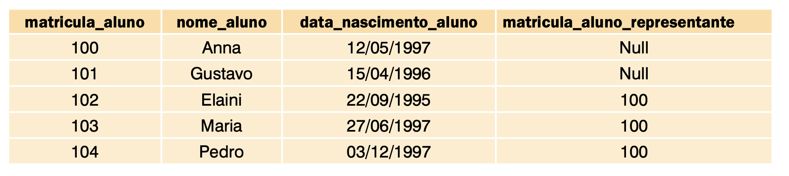
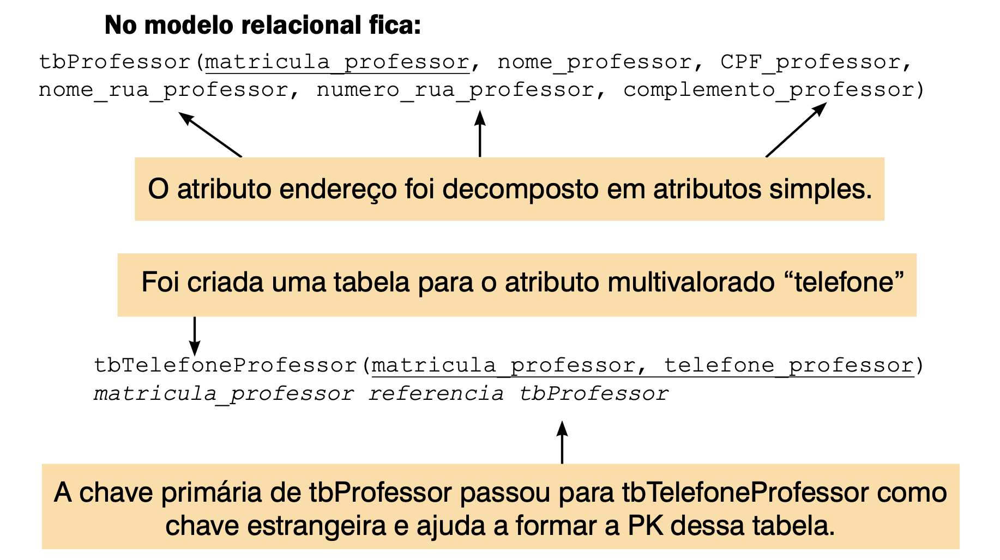
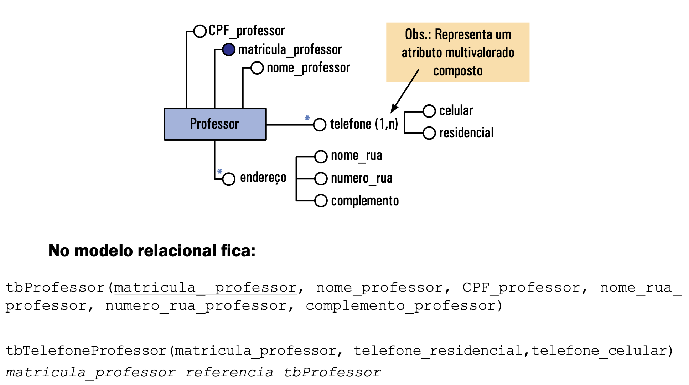
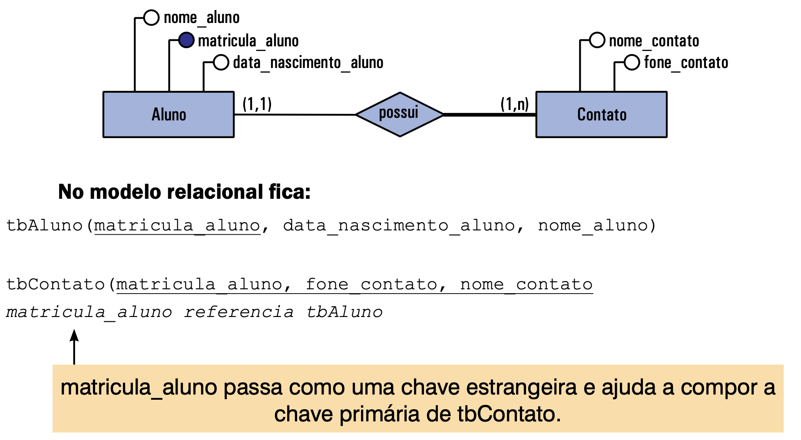
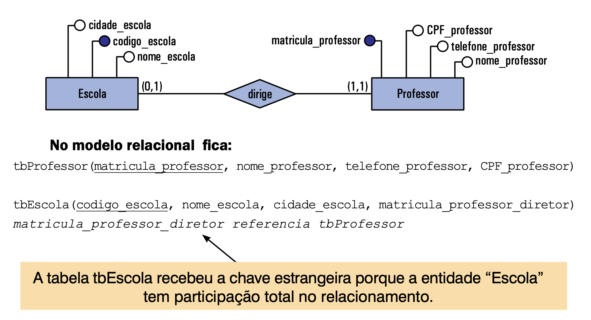
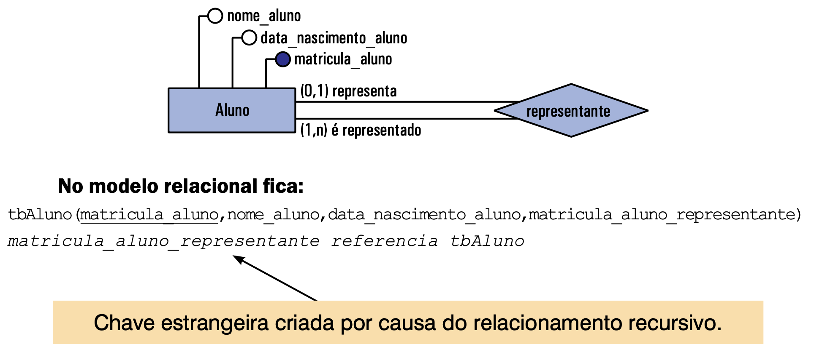
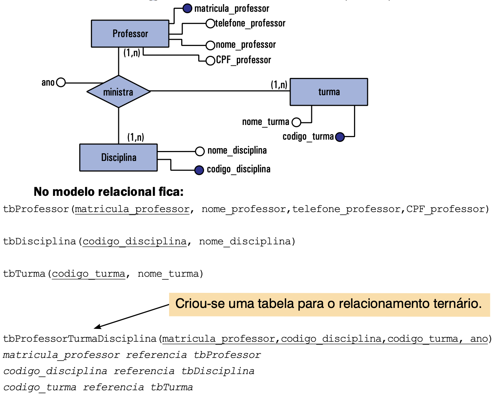
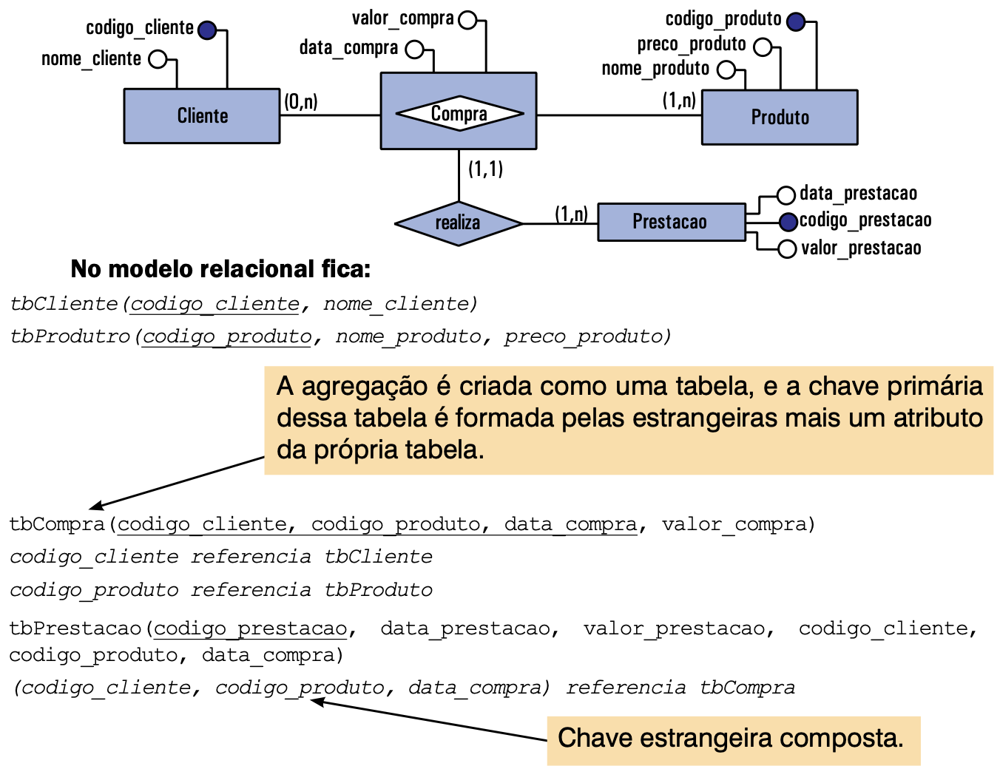

Aula 06 - Modelo relacional
Nesta aula, vamos entender como o modelo relacional organiza dados em tabelas e como transformamos um diagrama ER em um esquema relacional implementável.
Referência principal: Cap. 4 – Introdução ao Modelo Relacional (Angelloti). Conceitos de relação, tupla, atributo e domínio; chaves; integridade; conversão ER→Relacional.
O que é o Modelo Relacional?
É um modelo lógico que representa dados como uma coleção de tabelas (relações). Cada linha é um registro (tupla) e cada coluna é um atributo associado a um domínio de valores permitido.
Exemplo de descrição de tabela e chave primária sublinhada — ver seção “Introdução ao Modelo Relacional”.
Terminologia Essencial
- Tabela ≡ relação
- Linha ≡ tupla/registro
- Coluna ≡ atributo/campo
- Domínio ≡ tipo de dados permitido
Exemplo: tbAluno e tbTurma
Figura 4.1 — Registros em tbAluno.
Figura 4.2 — Registros em tbTurma.
Chave Primária (PK)
Identifica de forma única cada tupla da tabela. Não pode repetir, não pode ser nula. Base para ligações consistentes.
Boa prática: escolha a menor combinação de atributos que identifique univocamente cada registro.
Chave Estrangeira (FK)
Um atributo que referencia a PK de outra tabela (ou da mesma, em caso recursivo). Deve ter mesmo tipo/tamanho da primária correspondente.
codigo_turma referencia tbTurma
Notação indicando que codigo_turma é FK para a PK de tbTurma.
Integridade Referencial
Garante que valores de FK existam como PK correspondentes, ou então sejam nulos (quando previsto). Evita “registros órfãos”.
Exemplo: Não cadastrar Maria na turma 6 se não existe codigo_turma = 6 em tbTurma.
FK Recursiva
FK que aponta para a PK da mesma tabela (ex.: representante de turma é um aluno).
Figura 4.3 — Exemplo de tbAluno com FK recursiva (representante).
Do ER ao Relacional — Ideia Geral
O modelo relacional é construído a partir do DER: criamos tabelas (para entidades e alguns relacionamentos) e definimos FKs conforme as cardinalidades e participações.
Entidades → Tabelas
Cada entidade vira uma tabela com mesma PK e atributos.
- Atributo composto → decompose em atributos simples.
- Atributo multivalorado → nova tabela para o atributo + PK da entidade como FK.
Composto e Multivalorado
Figura 4.4 — Conversão de entidade, atributo composto e multivalorado.
Multivalorado Composto
Figura 4.5 — Conversão de atributo multivalorado composto.
Entidade Fraca
Gera tabela própria contendo sua PK (geralmente composta) + FK da entidade forte relacionada.
Figura 4.6 — Conversão de entidade fraca (ex.: Contato de Aluno).
Relacionamento N:N
Regra: Relacionamento Muitos-para-Muitos sempre vira nova tabela (associativa), levando as PKs das entidades como FKs. A PK da associativa é composta pelas FKs (às vezes + atributo descritivo).
Figura 4.7 — Exemplo: Professor ⟷ Disciplina → ProfessorDisciplina.
Relacionamento 1:N
Regra: Não cria tabela nova. A PK do lado “1” vai como FK para o lado “N”. Atributos do relacionamento “seguem” a FK.
Figura 4.8 — Exemplo: Escola (1) → Professor (N) recebe codigo_escola como FK.
Relacionamento 1:1
Não cria tabela nova. Inserimos a PK de uma entidade como FK na outra. Quem recebe? Depende da participação (total/parcial) para evitar nulos.
Figura 4.9 — Ex.: toda Escola tem um diretor (participação total em Escola), então a FK fica em tbEscola.
Relacionamento Recursivo
Relaciona a entidade com ela mesma → gera FK na própria tabela.
Figura 4.10 — Recursivo: Aluno → Aluno (representante).
Relacionamento Ternário (ou maior)
Três (ou mais) entidades: cria-se uma tabela contendo as FKs das entidades participantes (geralmente as que têm cardinalidade N) + atributos do relacionamento.
Figura 4.11 — Ex.: Professor–Disciplina–Turma → ProfessorTurmaDisciplina.
Agregação
Agregação (entidade resultante de um relacionamento) vira tabela, contendo seus atributos e FKs conforme os relacionamentos envolvidos.
Figura 4.12 — Ex.: Compra agregando Cliente e Produto; Prestacao referenciando Compra (FK composta).
Sintaxe de Modelo Relacional (Resumo)
tbDisciplina(codigo_disciplina, nome_disciplina)
tbProfessorDisciplina(matricula_professor, codigo_disciplina, data)
matricula_professor referencia tbProfessor
codigo_disciplina referencia tbDisciplina
Observe PK sublinhada, FKs declaradas e, quando necessário, PK composta na tabela associativa.
Atividade Prática - Parte 1 — Identificando PK/FK
Dado o esquema abaixo, identifique PKs e FKs.
tbTurma(codigo_turma, nome_turma)
Dica: codigo_turma em tbAluno é FK para tbTurma.
Atividade Prática - Parte 2 — Evitando violação
O que ocorre ao tentar inserir uma FK que não existe?
VALUES (104, 'Pedro Lima', 6);
Erro: integridade referencial — não existe codigo_turma = 6 em tbTurma.
Atividade Prática - Parte 3 — N:N para tabela
Converta o relacionamento Aluno cursa Disciplina (N:N) para o modelo relacional.
Crie tbMatricula com PK composta: (matricula_aluno, codigo_disciplina) e FKs adequadas.
Participação Total vs Parcial
Em 1:1, a decisão de onde colocar a FK leva em conta a participação para evitar nulos. Revise o caso “Diretor de Escola”.
Checklist de Conversão ER→Relacional
- Entidades → Tabelas (decompor compostos, multivalorados → nova tabela)
- 1:N → FK no lado N
- N:N → Tabela associativa com PK composta
- 1:1 → FK na entidade com participação total (ou menor incidência de nulos)
- Recursivo → FK na própria tabela
- Ternário/Agregação → Tabela com FKs necessárias
Atividade Prática - Parte final - Conversão ER→Relacional
- Dado o DER a seguir, escreva o modelo relacional completo.
- Indique PKs (sublinhe) e FKs (use “
x referencia tbX”). - Classifique os relacionamentos (1:N, N:N, 1:1; recursivo; ternário; agregação).
Perguntas Rápidas
- Por que N:N exige tabela associativa?
- Quando um atributo gera nova tabela?
- Como decidir a direção da FK em 1:1?
- Exemplo de FK recursiva no contexto da turma?
Dúvidas?
Façam o exercício das páginas 48 e 49.
Próxima aula será revisão para a prova.